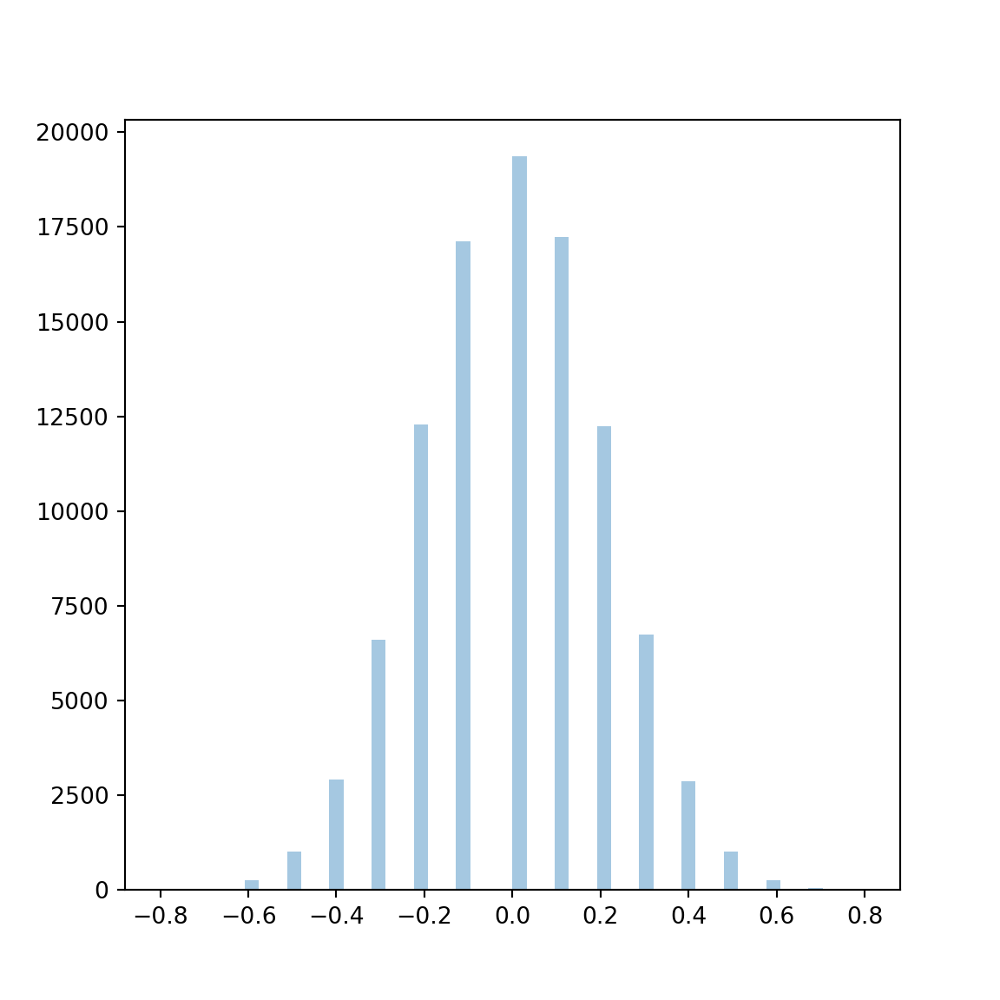

Chapter 6 Statistical analysis
6.1 Introduction
Statistical analysis usually encompasses 3 activities in a data science workflow. These are (a) descriptive analysis, (b) hypothesis testing and (c) statistical modeling. Descriptive analysis refers to a description of the data, which includes computing summary statistics and drawing plots. Hypothesis testing usually refers to statistically seeing if two (or more) groups are different from each other based on some metrics. Modeling refers to fitting a curve to the data to describe the relationship patterns of different variables in a data set.
In terms of Python packages that can address these three tasks:
| Task | Packages |
|---|---|
| Descriptive statistics | pandas, numpy, matplotlib, seaborn |
| Hypothesis testing | scipy, statsmodels |
| Modeling | statsmodels, lifelines, scikit-learn |
6.2 Descriptive statistics
Descriptive statistics that are often computed are the mean, median, standard deviation, inter-quartile range, pairwise correlations, and the like. Most of these functions are available in numpy, and hence are available in pandas. We have already seen how we can compute these statistics and have even computed grouped statistics. For example, we will compute these using the diamonds dataset
import numpy as np
import scipy as sc
import pandas as pd
import matplotlib.pyplot as plt
import seaborn as sns mean median std
color
D 3169.954096 1838.0 3356.590935
E 3076.752475 1739.0 3344.158685
F 3724.886397 2343.5 3784.992007
G 3999.135671 2242.0 4051.102846
H 4486.669196 3460.0 4215.944171
I 5091.874954 3730.0 4722.387604
J 5323.818020 4234.0 4438.187251There were other examples we saw yesterday along these lines. Refer to both the python_tools_ds and python_pandas documents
6.3 Simulation and inference
Hypothesis testing is one of the areas where statistics is often used. There are functions for a lot of the standard statistical tests in scipy and statsmodels. However, I’m going to take a little detour to see if we can get some understanding of hypothesis tests using the powerful simulation capabilities of Python. We’ll visit the in-built functions available in scipy and statsmodels as well.
6.3.1 Simulation and hypothesis testing
Question: You have a coin and you flip it 100 times. You get 54 heads. How likely is it that you have a fair coin?
We can simulate this process, which is random, using Python. The process of heads and tails from coin tosses can be modeled as a binomial distribution. We can repeat this experiment many many times on our computer, making the assumption that we have a fair coin, and then seeing how likely what we observed is under that assumption.
Simulation under reasonable assumptions is a great way to understand our data and the underlying data generating processes. In the modern era, it has most famously been used by Nate Silver of ESPN to simulate national elections in the US. There are many examples in engineering where simulations are done to understand a technology and figure out its tolerances and weaknesses, like in aircraft testing. It is also commonly used in epidemic modeling to help understand how an epidemic would spread under different conditions.
rng = np.random.RandomState(205) # Seed the random number generator
x = rng.binomial(100, 0.5, 100000) # Simulate 100,000 experiments of tossing a fair coin 100 times
sns.distplot(x, kde=True, rug=False)
plt.axvline(54, color = 'r'); # What we observed
plt.xlabel('Number of heads');count 100000.000000
mean 49.995590
std 5.011938
min 27.000000
25% 47.000000
50% 50.000000
75% 53.000000
max 72.000000
dtype: float64What we see from the histogram and the description of the data above is the patterns in data we would expect if we repeated this random experiment. We can already make some observations. First, we do see that the average number of heads we expect to get is 50, which validates that our experiment is using a fair coin. Second, we can reasonably get as few as 27 heads and as many as 72 heads even with a fair coin. In fact, we could look at what values we would expect to see 95% of the time.
array([40., 60.])This says that 95% of the time we’ll see values between 40 and 60. (This is not a confidence interval. This is the actual results of a simulation study. A confidence interval would be computed based on a single experiment, assuming a binomial distribution. We’ll come to that later).
So how likely would we be to see the 54 heads in 100 tosses assuming a fair coin? This can be computed as the proportion of experiments
0.18456This is what would be considered the p-value for the test that the coin is fair.
The p-value of a statistical hypothesis test is the likelihood that we would see an outcome at least as extreme as we observed under the assumption that the null hypothesis (H0) that we chose is actually true.
In our case, that null hypothesis is that the coin we’re tossing is fair. The p-value only gives evidence against the null hypothesis, but does not give evidence for the null hypothesis. In other words, if the p-value is small (smaller than some threshold we deem reasonable), then we can claim evidence against the null hypothesis, but if the p-value is large, we cannot say the null hypothesis is true.
What happens if we increase the number of tosses, and we look at the proportion of heads. We observe 54% heads.
rng = np.random.RandomState(205)
x = rng.binomial(10000, 0.5, 100000)/10000
sns.distplot(x)
plt.axvline(0.54, color = 'r')
plt.xlabel('Proportion of heads');count 100000.000000
mean 0.499991
std 0.004994
min 0.478100
25% 0.496600
50% 0.500000
75% 0.503400
max 0.520300
dtype: float64Well, that changed the game significantly. If we up the number of coin tosses per experiment to 10,000, so 100-fold increase, then we do not see very much variation in the proportion of tosses that are heads.
This is expected behavior because of a statistical theorem called the Law of Large Numbers, which essentially says that if you do larger and larger sized random experiments with the same experimental setup, your estimate of the true population parameter (in this case the true chance of getting a head, or 0.5 for a fair coin) will become more and more precise.
Now we see that for a fair coin, we should reasonably see between 47.8% and 52% of tosses should be heads. This is quite an improvement from the 27%-72% range we saw with 100 tosses.
We can compute our p-value in the same way as before.
0.0So we would never see 54% of our tosses be heads if we tossed a fair coin 10,000 times. Now, with a larger experiment, we would reject our null hypothesis H0 that we have a fair coin.
So same observation, but more data, changes our inference from not having sufficient evidence to say that the coin isn’t fair to saying that it isn’t fair quite definitively. This is directly due to the increased precision of our estimates and thus our ability to differentiate between much smaller differences in the truth.
Let’s see a bit more about what’s going on here. Suppose we assume that the coin’s true likelihood of getting a head is really 0.55, so a very small bias towards heads.
Food for thought: Is the difference between 0.50 and 0.54 worth worrying about? It probably depends.
We’re going to compare what we would reasonably see over many repeated experiments given the coin has a 0.50 (fair) and a 0.55 (slightly biased) chance of a head. First, we’ll do experiments of 100 tosses of a coin.
rng = np.random.RandomState(205)
x11 = rng.binomial(100, 0.5, 100000)/100 # Getting proportion of heads
x12 = rng.binomial(100, 0.55, 100000)/100
sns.distplot(x11, label = 'Fair')
sns.distplot(x12, label = 'Biased')<matplotlib.axes._subplots.AxesSubplot object at 0x11fa4a640>We see that there is a great deal of overlap in the potential outcomes over 100,000 repetitions of these experiments, so we have a lot of uncertainty about which model (fair or biased) is the truth.
Now, if we up our experiment to 10,000 tosses of each coin, and again repeat the experiment 100,000 times,
rng = np.random.RandomState(205)
x21 = rng.binomial(10000, 0.5, 100000)/10000
x22 = rng.binomial(10000, 0.55, 100000)/10000
sns.distplot(x21, label = 'Fair')
sns.distplot(x22, label = 'Biased')<matplotlib.axes._subplots.AxesSubplot object at 0x12e85adc0>We now find almost no overlap between the potential outcomes, so we can very easily distinguish the two models. This is part of what gathering more data (number of tosses) buys you.
We typically measure this ability to distinguish between two models using concepts of statistical power, which is the likelihood that we would find an observation at least as extreme as what we observed, under the alternative model (in this case, the biased coin model). We can calculate the statistical power quite easily for the two sets of simulated experiments. Remember, we observed 54% heads in our one instance of each experiment that we actually observed. By doing simulations, we’re “playing God” and seeing what could have happened, but in practice we only do the experiment once (how many clinical trials of an expensive drug would you really want to do?).
pval1 = np.mean(x11 > 0.54)
pval2 = np.mean(x21 > 0.54)
power1 = np.mean(x12 > 0.54)
power2 = np.mean(x22 > 0.54)
print('The p-value when n=100 is ', np.round(pval1, 2))The p-value when n=100 is 0.18The p-value when n=10,000 is 0.0Statistical power when n=100 is 0.54Statistical power when n=10,000 is 0.98So as n goes up, the p-value for the same experimental outcome goes down and the statistical power goes up. This is a general rule with increasing sample size.
This idea can be used to design a two-armed experiment. Suppose we are looking at the difference in proportion of mice who gained weight between a wild-type mouse and a knockout variant. Since mice are expensive, let’s limit the number of mice we’ll use in each arm to 10. We expect 30% of the wild-type mice to gain weight, and expect a higher proportion of the knockouts will gain weight. This is again the setup for a binomial experiment, with the number of “coin tosses” being 10 for each of the arms. We’re going to do two sets of experiments, one for the WT and one for the KO, and see the difference in proportions of weight gain (‘heads’) between them, and repeat it 100,000 times.
rng = np.random.RandomState(304)
N = 10
weight_gain_wt0 = rng.binomial(N, 0.3, 100000)/N # Get proportion
weight_gain_ko0 = rng.binomial(N, 0.3, 100000)/N # Assume first (null hypothesis) that there is no difference
diff_weight_gain0 = weight_gain_ko0 - weight_gain_wt0
sns.distplot(diff_weight_gain0, kde=False); # Since we only have 10 mice each, this histogram is not very smooth.
# No matter!
We usually design the actual test by choosing a cutoff in the difference in proportions and stating that we will reject the null hypothesis if our observed difference exceeds this cutoff. We choose the cutoff so that the p-value of the cutoff is some pre-determined error rate, typically 0.05 or 5% (This is not golden or set in stone. We’ll discuss this later). Let’s find that cutoff from this simulation. This will correspond to the 95th percentile of this simulated distribution.
0.3This means that at least 5% of the values will be 0.3 or bigger. In fact, this proportion is
0.06673So we’ll take 0.3 as the cutoff for our test (It’s fine if the Type 1 error is more than 0.05. If we take the next largest value in the simulation, we dip below 0.05). We’re basically done specifying the testing rule.
What we (and reviewers) like to know at this point is, what is the difference level for which you might get 80% power. The thinking is that if the true difference was, say, p > 0 rather than 0 (under the null hypothesis), we would reject the null hypothesis, i.e., get our observed difference to be more than 0.3, at least 80% of the time. We want to find out how big that value of p is. In other words, what is the level of difference in proportions at which we can be reasonably certain that our test will REJECT H0, given our sample size, when the true difference in proportions is p. Another way of saying this is how big does the difference in true proportions have to be before we would be fairly confident statistically of distinguishing that we have a difference between the two groups given our chosen sample size, i.e., fairly small overlaps in the two competing distributions.
We can also do this using simulation, by keeping the WT group at 0.3, increasing the KO group gradually, simulating the distribution of the difference in proportion and seeing at what point we get to a statistical power of about 80%. Recall, we’ve already determined that our test will reject H0 when the observed difference is greater than 0.3
p1 = np.linspace(0.3, 0.9, 100)
power = np.zeros(len(p1))
for i, p in enumerate(p1):
weight_gain_wt1 = rng.binomial(N, 0.3, 100000)/N
weight_gain_ko1 = rng.binomial(N, p, 100000)/N
diff_weight_gain1 = weight_gain_ko1 - weight_gain_wt1
power[i] = np.mean(diff_weight_gain1 > 0.3)sns.lineplot(p1, power)
plt.axhline(0.8, color = 'black', linestyle = '--');
plt.ylabel('Statistical power')
plt.xlabel('Proportion in KO mice');np.round(p1[np.argmin(np.abs(power - 0.8))] - 0.3, 2) # Find the location in the p1 array where power is closest to 0.80.48So to get to 80% power, we would need the true difference in proportion to be 0.48, or that at least 78% of KO mice should gain weight on average. This is quite a big difference, and its probably not very interesting scientifically to look for such a big difference, since it’s quite unlikely.
If we could afford 100 mice per arm, what would this look like?
rng = np.random.RandomState(304)
N = 100
weight_gain_wt0 = rng.binomial(N, 0.3, 100000)/N # Get proportion
weight_gain_ko0 = rng.binomial(N, 0.3, 100000)/N # Assume first (null hypothesis) that there is no difference
diff_weight_gain0 = weight_gain_ko0 - weight_gain_wt0
cutoff = np.quantile(diff_weight_gain0, 0.95)
p1 = np.linspace(0.3, 0.9, 100)
power = np.zeros(len(p1))
for i, p in enumerate(p1):
weight_gain_wt1 = rng.binomial(N, 0.3, 100000)/N
weight_gain_ko1 = rng.binomial(N, p, 100000)/N
diff_weight_gain1 = weight_gain_ko1 - weight_gain_wt1
power[i] = np.mean(diff_weight_gain1 > cutoff)
sns.lineplot(p1, power)
plt.axhline(0.8, color = 'black', linestyle = '--');
plt.ylabel('Statistical power')
plt.xlabel('Proportion in KO mice');0.17The minimum detectable difference for 80% power is now down to 0.17, so we’d need the KO mice in truth to show weight gain 47% of the time, compared to 30% in WT mice. This is more reasonable scientifically as a query.
6.3.2 A permutation test
A permutation test is a 2-group test that asks whether two groups are different with respect to some metric. Let us look at a breast cancer proteomics experiment to illustrate this. The experimental data contains protein expression for over 12 thousand proteins, along with clinical data. We can ask, for example, whether a particular protein expression differs by ER status.
Unnamed: 0 Complete TCGA ID Gender ... NP_004065 NP_068752 NP_219494
0 0 TCGA-A2-A0CM FEMALE ... NaN NaN NaN
1 1 TCGA-BH-A18Q FEMALE ... -1.778435 NaN -3.069752
2 2 TCGA-A7-A0CE FEMALE ... NaN NaN NaN
3 3 TCGA-D8-A142 FEMALE ... NaN NaN NaN
4 4 TCGA-AO-A0J6 FEMALE ... NaN NaN -3.753616
[5 rows x 12585 columns]We will first do the classical t-test, that is available in the scipy package.
import scipy as sc
import statsmodels as sm
test_probe = 'NP_001193600'
tst = sc.stats.ttest_ind(brca[brca['ER Status']=='Positive'][test_probe], # Need [] since names have spaces
brca[brca['ER Status']=='Negative'][test_probe],
nan_policy = 'omit')
np.round(tst.pvalue, 3)0.277The idea about a permutation test is that, if there is truly no difference then it shouldn’t make a difference if we shuffled the labels of ER status over the study individuals. That’s literally what we will do. We will do this several times, and look at the average difference in expression each time. This will form the null distribution under our assumption of no differences by ER status. We’ll then see where our observed data falls, and then be able to compute a p-value.
The difference between the simulations we just did and a permutation test is that the permutation test is based only on the observed data. No particular models are assumed and no new data is simulated. All we’re doing is shuffling the labels among the subjects, but keeping their actual data intact.
nsim = 10000
rng = np.random.RandomState(294)
x = np.where(brca['ER Status']=='Positive', -1, 1)
y = brca[test_probe].to_numpy()
obs_diff = np.nanmean(y[x==1]) - np.nanmean(y[x==-1])
diffs = np.zeros(nsim)
for i in range(nsim):
x1 = rng.permutation(x)
diffs[i] = np.nanmean(y[x1==1]) - np.nanmean(y[x1 == -1])'P-value from permutation test is 0.2606'This is pretty close to what we got from the t-test
6.3.3 Testing many proteins
We could do the permutation test all the proteins using the array operations in numpy
expr_names = [u for u in list(brca.columns) if u.find('NP') > -1] # Find all column names with NP
exprs = brca[expr_names] # Extract the protein datax = np.where(brca['ER Status']=='Positive', -1, 1)
obs_diffs = exprs[x==1].mean(axis=0)-exprs[x==-1].mean(axis=0)nsim = 1000
diffs = np.zeros((nsim, exprs.shape[1]))
for i in range(nsim):
x1 = rng.permutation(x)
diffs[i,:] =exprs[x1==1].mean(axis=0) - exprs[x1==-1].mean(axis=0)12395This plot shows that there is probably some proteins which are differentially expressed between ER+ and ER- patients. (If no proteins had any difference, this histogram would be flat, since the p-values would be uniformly distributed). The ideas around Gene Set Enrichment Analysis (GSEA) can also be applied here.
exprs_shortlist = [u for i, u in enumerate(list(exprs.columns)) if pvals[i] < 0.0001 ]
len(exprs_shortlist)511This means that, if we considered a p-value cutoff for screening at 0.0001, we would select 486 of the 12395 proteins for further study.
6.3.4 Getting a confidence interval using the bootstrap
We can use simulations to obtain a model-free confidence interval for particular parameters of interest based on our observed data. The technique we will demonstrate is called the bootstrap. The idea is that if we sample with replacement from our observed data to get another data set of the same size as the observed data, and compute our statistic of interest, and then repeat this process many times, then the distribution of our statistic that we will obtain this way will be very similar to the true sampling distribution of the statistic if we could “play God”. This has strong theoretical foundations from work done by several researchers in the 80s and 90s.
- Choose the number of simulations
nsim - for each iteration (1,…,nsim)
- Simulate a dataset with replacement from the original data.
- compute and store the statistic
- Compute the 2.5th and 97.5th percential of the distribution of the statistic. This is your confidence interval.
Let’s see this in action. Suppose we tossed a coin 100 times. We’re going to find a confidence interval for the proportion of heads from this coin.
array([1, 0, 0, 1, 1, 1, 1, 0, 0, 1, 1, 1, 1, 0, 1, 1, 1, 1, 1, 1, 0, 0,
1, 0, 1, 1, 1, 1, 1, 1, 1, 1, 1, 1, 0, 1, 1, 1, 0, 1, 0, 1, 1, 0,
1, 1, 0, 0, 1, 1, 1, 1, 1, 1, 1, 1, 1, 1, 1, 1, 0, 1, 0, 1, 1, 1,
1, 1, 0, 1, 0, 1, 1, 1, 1, 1, 0, 1, 0, 1, 0, 1, 1, 0, 1, 1, 0, 1,
1, 1, 1, 0, 1, 1, 1, 0, 1, 1, 1, 1])This gives the sequence of heads (1) and tails (0), assuming the true probability of heads is 0.7.
We now create 100000 bootstrap samples from here.
nsim = 100000
boots = np.random.choice(x, (len(x), nsim), replace = True) # sample from the data
boot_estimates = boots.mean(axis = 0) # compute mean of each sample, i.e proportion of heads
sns.distplot(boot_estimates);array([0.66, 0.83])So our 95% bootstrap confidence interval is (0.66, 0.83). Our true value of 0.7 certainly falls in it.
6.4 Classical hypothesis testing
Python has the tools to do classic hypothesis testing as well. Several functions are available in the scipy.stats module. The commonly used tests that are available are as follows:
| Function | Test |
|---|---|
ttest_1samp |
One-sample t-test |
ttest_ind |
Two-sample t-test |
ttest_rel |
Paired t-test |
wilcoxon |
Wilcoxon signed-rank test (nonparametric paired t-test) |
ranksum |
Wilcoxon rank-sum test (nonparametric 2-sample t-test) |
chi2_contingency |
Chi-square test for independence |
fisher_exact |
Fisher’s exact test on a 2x2 contingency table |
f_oneway |
One-way ANOVA |
pearsonr |
Testing for correlation |
There are also several tests in statsmodels.stats
| Functions | Tests |
|---|---|
proportions_ztest |
Test for difference in proportions |
mcnemar |
McNemar’s test |
sign_test |
Sign test |
multipletests |
p-value correction for multiple tests |
fdrcorrection |
p-value correction by FDR |
We’ve seen an example of these tests earlier. .
6.5 Regression analysis
The regression modeling frameworks in Python are mainly in statsmodels, though some of it can be found in scikit-learn which we will see tomorrow. We will use the diamonds dataset for demonstration purposes. We will attempt to model the diamond price against several of the other diamond characteristics.
import statsmodels.api as sm
import statsmodels.formula.api as smf # Use the formula interface to statsmodels
mod1 = smf.glm('price ~ carat + clarity + depth + cut + color', data = diamonds).fit()<class 'statsmodels.iolib.summary.Summary'>
"""
Generalized Linear Model Regression Results
==============================================================================
Dep. Variable: price No. Observations: 53940
Model: GLM Df Residuals: 53920
Model Family: Gaussian Df Model: 19
Link Function: identity Scale: 1.3382e+06
Method: IRLS Log-Likelihood: -4.5699e+05
Date: Fri, 22 May 2020 Deviance: 7.2158e+10
Time: 01:06:48 Pearson chi2: 7.22e+10
No. Iterations: 3
Covariance Type: nonrobust
====================================================================================
coef std err z P>|z| [0.025 0.975]
------------------------------------------------------------------------------------
Intercept -6902.0434 245.309 -28.136 0.000 -7382.839 -6421.247
clarity[T.IF] 5415.0087 52.191 103.754 0.000 5312.717 5517.301
clarity[T.SI1] 3571.3831 44.613 80.053 0.000 3483.944 3658.822
clarity[T.SI2] 2623.0139 44.813 58.532 0.000 2535.181 2710.846
clarity[T.VS1] 4531.3874 45.570 99.437 0.000 4442.071 4620.704
clarity[T.VS2] 4214.9672 44.865 93.948 0.000 4127.033 4302.901
clarity[T.VVS1] 5068.3553 48.248 105.049 0.000 4973.792 5162.919
clarity[T.VVS2] 4963.7218 46.924 105.781 0.000 4871.752 5055.692
cut[T.Good] 644.1406 34.173 18.849 0.000 577.162 711.119
cut[T.Ideal] 982.1534 31.780 30.905 0.000 919.866 1044.441
cut[T.Premium] 849.9079 32.551 26.110 0.000 786.110 913.706
cut[T.Very Good] 833.2870 32.291 25.806 0.000 769.998 896.576
color[T.E] -211.8364 18.316 -11.566 0.000 -247.734 -175.939
color[T.F] -303.2741 18.509 -16.385 0.000 -339.551 -266.997
color[T.G] -505.3602 18.127 -27.879 0.000 -540.888 -469.832
color[T.H] -977.5332 19.281 -50.699 0.000 -1015.323 -939.743
color[T.I] -1439.0796 21.655 -66.455 0.000 -1481.523 -1396.636
color[T.J] -2323.8709 26.731 -86.935 0.000 -2376.263 -2271.479
carat 8885.8162 12.034 738.362 0.000 8862.229 8909.403
depth -7.1602 3.727 -1.921 0.055 -14.464 0.144
====================================================================================
"""This is the basic syntax for modeling in statsmodels. Let’s go through and parse it.
One thing you notice is that we’ve written a formula inside the model
mod1 = smf.glm('price ~ carat + clarity + depth + cut + color', data = diamonds).fit()This is based on another Python package, patsy, which allows us to write the model like this. This will read as
“price depends on carat, clarity, depth, cut and color”. Underneath a lot is going on.
- color, clarity, and cut are all categorical variables. They actually need to be expanded into dummy variables, so we will have one column for each category level, which is 1 when the diamond is of that category and 0 otherwise.
- An intercept terms is added
- The dummy variables are concatenated to the continuous variables
- The model is run
We can see the dummy variables using pandas
carat depth table ... clarity_VS2 clarity_VVS1 clarity_VVS2
0 0.23 61.5 55.0 ... 0 0 0
1 0.21 59.8 61.0 ... 0 0 0
2 0.23 56.9 65.0 ... 0 0 0
3 0.29 62.4 58.0 ... 1 0 0
4 0.31 63.3 58.0 ... 0 0 0
... ... ... ... ... ... ... ...
53935 0.72 60.8 57.0 ... 0 0 0
53936 0.72 63.1 55.0 ... 0 0 0
53937 0.70 62.8 60.0 ... 0 0 0
53938 0.86 61.0 58.0 ... 0 0 0
53939 0.75 62.2 55.0 ... 0 0 0
[53940 rows x 27 columns]